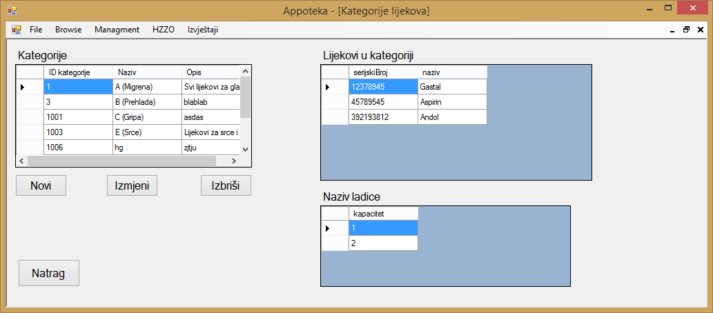
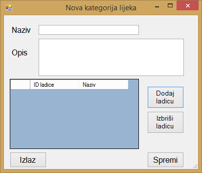
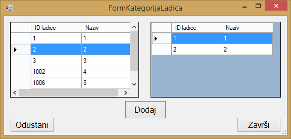
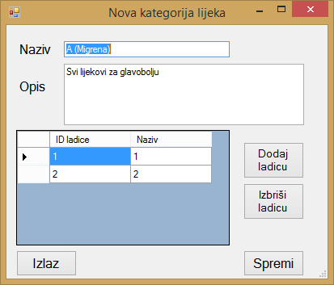
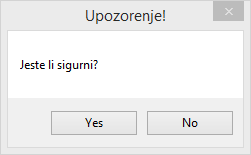

Klikom na gumb "Managment" u glavnom meniju otvara se izbor od četiri stavke, to su "Zaposlenici", "Dobavljači", "Kategorije lijekova" i "Ladice". Klikom na gumb "Kategorije lijekova" otvara se prozor u kojemu se nalazi popis svih kategorija lijekova koje su trenutno unesene u aplikaciju te su prikazani svi relevantni podaci o tim istim kategorijama. Također za pojedinu kategoriju prikazani su svi lijekovi koji se nalaze u toj kategoriji te naziv ladica u kojima se te kategorije lijekova nalaze.

Ako korisnik aplikacije želi unijeti novu kategoriju lijekova u aplikaciju to može učiniti klikom na gumb "Novi" pri čemu se otvara novi prozor u kojemu je potrebno unijeti podatke o novoj kategoriji.

Nakon što korisnik unese podatke o novoj kategoriji lijeka, klikom na gumb "Dodaj ladicu" može dodati ladice u kojiima će ta kategorija lijeka biti zastupljena. Nakon što su željene ladice dodane, moguće ih je brisati na način da se označi željena ladica te klikne na gumb "Izbriši ladicu", klikom na gumb "Spremi" nova kategorija lijekova se sprema te aplikacija javlja kako je nova kategorija uspješno spremljena. Klikom na tipku "Izlaz" postupak dodavanja nove kategorije lijekova se poništava.

Ladice je moguće dodati u kategoriju na način da se željena ladica označi i da se klikne na gumb "Dodaj". Kada smo dodali sve ladice za koje želimo da određenea kategorija lijekova bude zastupljena u njima, kliknemo na gumb "Završi" nakon čega će se odabrane ladice pojaviti u tablici nove kategorije. Klikom na gumb "Odustani" postupak dodavanja ladica u kategoriju se poništava.
Ako korisnik aplikacije želi izmijeniti određenu kategoriju lijekova, to može učiniti na način da označi željenu kategoriju lijekova te klikne na gumb "Izmijeni". Klikom na gumb "Izmijeni" otvara se novi prozor u kojemu se nalaze podaci o označenoj kategoriji lijekova, te ladice u kojima je ta kategorija lijekova zastupljena.

Nakon što korisnik aplikacije izmijeni željene podatke o kategoriji lijeka, klikom na gumb "Spremi" izmijenjena kategorija lijekova se sprema u aplikaciju, dok se klikom na gumb "Izlaz" postupak ažuriranja kategorije lijeka poništava.
Ako korisnik želi izbrisati određenu kategoriju lijeka to može učiniti na način da označi željenu kategoriju i klikne na gumb "Izbriši", nakon što korisnik klikne na gumb "Izbriši" aplikacija će prikazati poruku kojom se nastoji potvrditi odluka korisnika. Klikom na gumb "Yes" iz aplikacije se briše označena kategorija, dok se klikom na gumb "No" odustaje od brisanja kategorije.

Klikom na gumb "Natrag" aplikacija korisnika vraća na početni zaslon aplikacije.